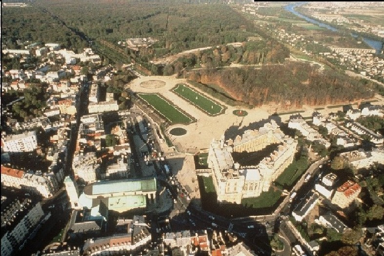

ceci est mon second programme en html
et ca marche pour faire un nouveau paragraphe
aller a la ligne
mettre en gras
faire un lien vers le premier
programme

Des les temps les plus recules, la region est habite, car les conditions de vie y sont favorables : sol fertile, foret giboyeuse, poissons abondants dans la Seine...
Les siecles passent : Gallo-romains et Merovingiens se succedent, en particulier dans la petite vallee du Ru de Buzot, situee a l'ouest de la ville. La famille de Saint-Erembert y vit au VIIe siecle, et Saint-Leger y subit son martyre en 678. C'est pour expier ce dernier crime que Clotaire III fait edifier un modeste sanctuaire autour duquel se groupent quelques maisons. L'endroit s'appelle aujourd'hui "les fonds-Saint-Leger".
Lorsque Robert le Pieux monte sur le trone en 996, l'amour de la chasse l'attire en foret de Laye et il ordonne la construction d'un monastere en l'honneur de Saint-Germain de Paris, aux lieu et place de l'actuelle eglise Saint-Germain.
Une modeste bourgade se developpe, qui deviendra cite...